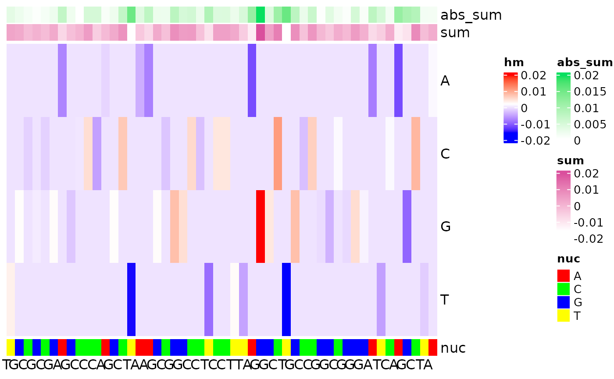

Introduction
The Integrated Gradient (IG) method can be used to determine what parts of an input sequence are important for the models decision. We start with training a model that can differentiate sequences based on the GC content (as described in the Getting started tutorial).
Model Training
We create two simple dummy training and validation data sets. Both consist of random ACGT sequences but the first category has a probability of 40% each for drawing G or C and the second has equal probability for each nucleotide (first category has around 80% GC content and second one around 50%).
set.seed(123)
# Create data
vocabulary <- c("A", "C", "G", "T")
data_type <- c("train_1", "train_2", "val_1", "val_2")
for (i in 1:length(data_type)) {
temp_file <- tempfile()
assign(paste0(data_type[i], "_dir"), temp_file)
dir.create(temp_file)
if (i %% 2 == 1) {
header <- "label_1"
prob <- c(0.1, 0.4, 0.4, 0.1)
} else {
header <- "label_2"
prob <- rep(0.25, 4)
}
fasta_name_start <- paste0(header, "_", data_type[i], "file")
create_dummy_data(file_path = temp_file,
num_files = 1,
seq_length = 20000,
num_seq = 1,
header = header,
prob = prob,
fasta_name_start = fasta_name_start,
vocabulary = vocabulary)
}
# Create model
maxlen <- 50
model <- create_model_lstm_cnn(maxlen = maxlen,
filters = c(8, 16),
kernel_size = c(8, 8),
pool_size = c(3, 3),
layer_lstm = 8,
layer_dense = c(4, 2),
model_seed = 3)## Loaded Tensorflow version 2.9.1## Model: "model"
## ________________________________________________________________________________
## Layer (type) Output Shape Param # Trainable
## ================================================================================
## input_1 (InputLayer) [(None, 50, 4)] 0 Y
## conv1d (Conv1D) (None, 50, 8) 264 Y
## max_pooling1d (MaxPooling1D) (None, 16, 8) 0 Y
## batch_normalization (BatchNor (None, 16, 8) 32 Y
## malization)
## conv1d_1 (Conv1D) (None, 16, 16) 1040 Y
## batch_normalization_1 (BatchN (None, 16, 16) 64 Y
## ormalization)
## max_pooling1d_1 (MaxPooling1D (None, 5, 16) 0 Y
## )
## lstm (LSTM) (None, 8) 800 Y
## dense (Dense) (None, 4) 36 Y
## dense_1 (Dense) (None, 2) 10 Y
## ================================================================================
## Total params: 2,246
## Trainable params: 2,198
## Non-trainable params: 48
## ________________________________________________________________________________
# Train model
hist <- train_model(model,
train_type = "label_folder",
run_name = "gc_model_1",
path = c(train_1_dir, train_2_dir),
path_val = c(val_1_dir, val_2_dir),
epochs = 6,
batch_size = 64,
steps_per_epoch = 50,
step = 50,
vocabulary_label = c("high_gc", "equal_dist"))## Training done.
plot(hist)
Integrated Gradient
We can try to visualize what parts of an input sequence is important for the models decision, using Integrated Gradient. Let’s create a sequence with a high GC content. We use same number of Cs as Gs and of As as Ts.
set.seed(321)
g_count <- 17
stopifnot(g_count < 25)
a_count <- (50 - (2*g_count))/2
high_gc_seq <- c(rep("G", g_count), rep("C", g_count), rep("A", a_count), rep("T", a_count))
high_gc_seq <- high_gc_seq[sample(maxlen)] %>% paste(collapse = "") # shuffle nt order
high_gc_seq## [1] "TGCGCGAGCCCAGCTAAGCGGCCTCCTTAGGCTGCCGGCGGGATCAGCTA"We need to one-hot encode the sequence before applying Integrated Gradient.
high_gc_seq_one_hot <- seq_encoding_label(char_sequence = high_gc_seq,
maxlen = 50,
start_ind = 1,
vocabulary = vocabulary)
head(high_gc_seq_one_hot[1,,])## [,1] [,2] [,3] [,4]
## [1,] 0 0 0 1
## [2,] 0 0 1 0
## [3,] 0 1 0 0
## [4,] 0 0 1 0
## [5,] 0 1 0 0
## [6,] 0 0 1 0Our model should be confident, this sequences belongs to the first class
pred <- predict(model, high_gc_seq_one_hot, verbose = 0)
colnames(pred) <- c("high_gc", "equal_dist")
pred## high_gc equal_dist
## [1,] 0.9870314 0.01296861We can visualize what parts where important for the prediction.
ig <- integrated_gradients(
input_seq = high_gc_seq_one_hot,
target_class_idx = 1,
model = model)
heatmaps_integrated_grad(integrated_grads = ig,
input_seq = high_gc_seq_one_hot)## [[1]]
We may test how our models prediction changes if we exchange certain nucleotides in the input sequence. First, we look for the positions with the smallest IG score.
## row col
## [1,] 28 4We may change the nucleotide with the lowest score and observe the change in prediction confidence
# copy original sequence
high_gc_seq_one_hot_changed <- high_gc_seq_one_hot
# prediction for original sequence
predict(model, high_gc_seq_one_hot, verbose = 0)## [,1] [,2]
## [1,] 0.9870314 0.01296861## row col
## [1,] 28 4
row_index <- smallest_index[ , "row"]
col_index <- smallest_index[ , "col"]
new_row <- rep(0, 4)
nt_index_old <- col_index
nt_index_new <- which.max(ig[row_index, ])
new_row[nt_index_new] <- 1
high_gc_seq_one_hot_changed[1, row_index, ] <- new_row
cat("At position", row_index, "changing", vocabulary[nt_index_old], "to", vocabulary[nt_index_new], "\n")## At position 28 changing T to A## [,1] [,2]
## [1,] 0.9918175 0.008182472Let’s repeatedly apply the previous step and change the sequence after each iteration.
# copy original sequence
high_gc_seq_one_hot_changed <- high_gc_seq_one_hot
pred_list <- list()
pred_list[[1]] <- pred <- predict(model, high_gc_seq_one_hot, verbose = 0)
# change nts
for (i in 1:20) {
# update ig scores for changed input
ig <- integrated_gradients(
input_seq = high_gc_seq_one_hot_changed,
target_class_idx = 1,
model = model) %>% as.array()
smallest_index <- which(ig == min(ig), arr.ind = TRUE)
smallest_index
row_index <- smallest_index[ , "row"]
col_index <- smallest_index[ , "col"]
new_row <- rep(0, 4)
nt_index_old <- col_index
nt_index_new <- which.max(ig[row_index, ])
new_row[nt_index_new] <- 1
high_gc_seq_one_hot_changed[1, row_index, ] <- new_row
cat("At position", row_index, "changing", vocabulary[nt_index_old],
"to", vocabulary[nt_index_new], "\n")
pred <- predict(model, high_gc_seq_one_hot_changed, verbose = 0)
pred_list[[i + 1]] <- pred
}## At position 28 changing T to A
## At position 28 changing A to C
## At position 27 changing T to A
## At position 44 changing T to A
## At position 27 changing A to C
## At position 15 changing T to A
## At position 15 changing A to C
## At position 16 changing A to C
## At position 17 changing A to C
## At position 44 changing A to C
## At position 49 changing T to A
## At position 49 changing A to C
## At position 33 changing T to A
## At position 7 changing A to C
## At position 33 changing A to C
## At position 46 changing A to C
## At position 50 changing A to C
## At position 39 changing C to A
## At position 39 changing A to C
## At position 39 changing C to A
pred_df <- do.call(rbind, pred_list)
pred_df <- data.frame(pred_df, iteration = 0:(nrow(pred_df) - 1))
names(pred_df) <- c("high_gc", "equal_dist", "iteration")
ggplot(pred_df, aes(x = iteration, y = high_gc)) + geom_line() + ylab("high GC confidence")
We can try the same in the opposite direction, i.e. replace big IG scores.
# copy original sequence
high_gc_seq_one_hot_changed <- high_gc_seq_one_hot
pred_list <- list()
pred_list[[1]] <- pred <- predict(model, high_gc_seq_one_hot, verbose = 0)
# change nts
for (i in 1:20) {
# update ig scores for changed input
ig <- integrated_gradients(
input_seq = high_gc_seq_one_hot_changed,
target_class_idx = 1,
model = model) %>% as.array()
biggest_index <- which(ig == max(ig), arr.ind = TRUE)
biggest_index
row_index <- biggest_index[ , "row"]
col_index <- biggest_index[ , "col"]
new_row <- rep(0, 4)
nt_index_old <- col_index
nt_index_new <- which.min(ig[row_index, ])
new_row[nt_index_new] <- 1
high_gc_seq_one_hot_changed[1, row_index, ] <- new_row
cat("At position", row_index, "changing", vocabulary[nt_index_old], "to", vocabulary[nt_index_new], "\n")
pred <- predict(model, high_gc_seq_one_hot_changed, verbose = 0)
pred_list[[i + 1]] <- pred
}## At position 23 changing C to A
## At position 26 changing C to A
## At position 25 changing C to A
## At position 45 changing C to A
## At position 18 changing G to A
## At position 35 changing C to A
## At position 32 changing C to A
## At position 30 changing G to A
## At position 20 changing G to A
## At position 21 changing G to A
## At position 13 changing G to A
## At position 38 changing G to A
## At position 34 changing G to A
## At position 31 changing G to A
## At position 4 changing G to A
## At position 3 changing C to A
## At position 8 changing G to A
## At position 18 changing A to C
## At position 18 changing C to A
## At position 18 changing A to C
pred_df <- do.call(rbind, pred_list)
pred_df <- data.frame(pred_df, iteration = 0:(nrow(pred_df) - 1))
names(pred_df) <- c("high_gc", "equal_dist", "iteration")
ggplot(pred_df, aes(x = iteration, y = high_gc)) + geom_line() + ylab("high GC confidence")